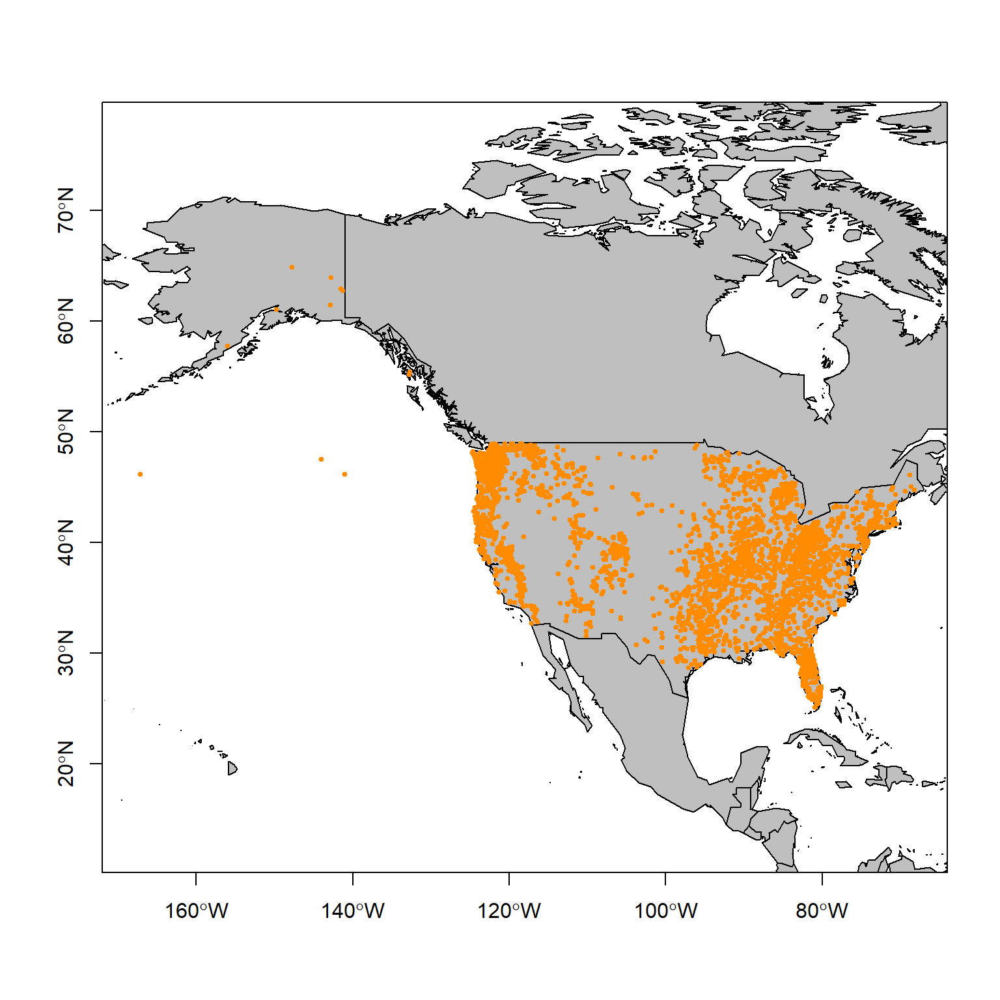

1 What even is data science?
Learning Objectives
After completing this lab you should be able to
- define what data is and what the structural/functional relationships to information, knowledge, insight and wisdom are.
- describe what data science is and the major field/skill sets that comprise it.
- describe the individual components that comprise the data science life cycle.
1.1 Defining “data” and “science”
Data are qualitative and quantitative observations that are measured and collected.
► Question 1.1
Data fall in two distinct categories, categorical and numerical data. Briefly compare and contrast these two categories by describing the data types you would expect to find in each.
The ‘data - information - knowledge - wisdom pyramid’ gives us a framework to consider how data can be used to inform decision making and impact the world around us. Not until data is organized and processed thus adding context can we glean information from the signal. Additional meaning is transferred as we synthesize and further contextualize information resulting in knowledge.
These three categories look backwards - we describe the “what” and ask about the “why” to reveal patterns and relationships. At this point we start looking forward to determine what action(s) should be taken, we know seek to reveal principles and directions that can be applied.
We integrate knowledge across disciplines to gain insight and wisdom to further understanding of problems and derive actionable solutions. This culminates in the decision-making process resulting in change.
► Question 1.2
The science council defines science as the pursuit and application of knowledge and understanding of the natural and social world following a systematic methodology based on evidence. Compare and contrast this definition to the DIKW framework and make an argument that all science is data science.
1.2 What even is data science?
Data science is a fuzzy term and no single definition exists. Most definitions emphasize that it is a interdisciplinary field and that it has arisen in response to the increasingly large data sets that are produced.
A common way of defining data science is to describe it as being the intersection of domain knowledge, statistics/mathematics, and computer science - though different definitions will ascribe more importance to certain different components.
One distinction to the typical scientific process as you may have learned it to be is that a large component of data science is hypothesis generation through exploratory analysis rather than hypothesis confirmation.
The data science process generally starts by posing an interesting question and ends with visualizing and communicating the results. The key steps to the end results are obtaining the data, processing and exploring the data, and modeling the data to understand the data set and derive conclusions.
1.3 The data science process
1.3.1 Ask an interesting question
Let’s start by asking an interesting question:
Will Sasquatch by impacted by climate change?
Specifically, climate change could result in a shift in habitat availability, i.e. should we expect a species extinction because of habitat loss or a range expansion or range shift?
To do this we need to generate a species distribution model (SDM) for the Sasquatch, a large, hairy, bipedal ape-like creature found (or is it?) throughout North America4 I suppose, technically, since we were venturing into cryptozoology here it is not a species, but rather a cryptid distribution model, i.e. first we need to understand where Sasquatch are currently distributed to then assess how that might change in the future.
1.3.2 Get occurrence data
The first thing we need for any SDM is a data set documenting species occurrence, i.e. geo-coded observations of a given species in the wild.
Four our purposes, we turn to the Bigfoot Field Researchers Organization (BFRO), founded in 1995 as the “only scientific research organization exploring the Bigfoot/Sasquatch mystery”. You can turn to their website for answers on important FAQs, including ‘Do Bigfoot Sasquatch bury their dead?’, ‘Where is the physical evidence?’, ‘Wasn’t this all shown to be a fake?, and ’Why do you want scientists to recognize the Sasquatch as a species? Isn’t it better to just leave them alone?’. Their main focus though is on compiling reports of sightings and investigating them. In other words, they have a database full of geo-coded reported sightings5 And even better, it has already been downloaded and wrangled and is accessible (with sightings through 2018) right here..
Let’s read in the data and then we can take a look at the information we can glean from this data set by looking at the column names.
1.3.3 Tidy, Transform & Explore the data
Let’s start by taking a look at our data set to determine how we need to wrangle to get the information we need process it so we can generate our species distribution model.
Because we need to be able to identify the exact locations Sasquatch occur, we are going to remove any observations that do not have latitude and longitude information.
Next, let’s consider is what geographic extent of the observations is by looking at the distributions on a map.
# get minimum and maximum lat/longs
max.lat <- ceiling(max(occurrence$latitude))
min.lat <- floor(min(occurrence$latitude))
max.lon <- ceiling(max(occurrence$longitude))
min.lon <- floor(min(occurrence$longitude))
# create an extent object of the range of observations
geo_range <- extent(x = c(min.lon, max.lon, min.lat, max.lat))
# get base map
data(wrld_simpl)
# plot the base map
plot(wrld_simpl,
xlim = c(min.lon, max.lon),
ylim = c(min.lat, max.lat),
axes = TRUE,
col = "grey75")
# add individual occurrences
points(x = occurrence$longitude,
y = occurrence$latitude,
col = "darkorange",
pch = 20,
cex = 0.75)
# draw box around figure
box()Figure 1.1: Map of Sasquatch sighting in the United States based on the BFRO database (1950 - 2021).
Here is an example of where domain knowledge comes in - while we are tidying and exploring the data set we need to assess whether there are artifacts our outlier data points that should be removed.
► Question 1.3
Give a brief descriptions of the spatial distribution of the occurrence of Sasquatch in the United States. Note areas where sightings appear to be random, clustered or more dispersed, determine if you think any points should be removed.
► Question 1.4
Discuss some possible explanations for the patterns you have observed to determine whether you think this data set is a reasonable representation of the ecological niche of the Sasquatch and can be used to create a species distribution model.
► Solution
This should work - on to the next step!
1.3.4 Get more data
Occurrence data along will not allow us to build a species distribution model; what we need is environmental data to go with the locations, i.e. we need a set of predictor variables.
Combining multiple data sets is typical for data science projects, frequently the quality of a project hinges on the availability of hight quality data sets that can provide information to describe or preodict behavior if the data set you are exploring.
Climate is complex and multidimensional, though at its core climate is determined by long-term patterns in mean and variability of temperature and precipitation.
We are going to use the bioclim data set from CliMond. Bioclim variables are commonly used for species distribution modeling as they are based on long-term trends (as opposed to e.g. the exact conditions when the species was observed).
► Question 1.5
Look up the descriptions of the bioclim variables and give a brief description of the four abiotic parameters that are included and how they are being parameterized. Argue which you think are most important to describe a species distribution/ecological niche and whether you think overall this data set will help us understand Sasquatch species distribution.
The data set we are using includes a core set of 19 variables that describe temperature and precipitation, along with an additional 16 variables that describe solar radiation and soil moisture. This information is encoded in the raster files of the historical (contemporary) bioclim data sets at a resolution of 10’ (minutes) into the data folder. The “historical” data set consists of data from 1961 - 1990 centered on 1975.
A raster file is an image file consisting of pixels with data associated with it. In this case, our “pixels” are 10’ x 10’ and depending on the layer the value associated with each pixel is the value for that bioclim value at that geographic location.
# get list of files
files <- list.files("data/", pattern='^CM10_1975H', full.names=TRUE )
# import and convert to raster stack
predictors <- stack(files)We have now created an object that at its core consists of a list where each element is a layer (bioclim variable raster).
1.3.5 Tidy, transform & explore the data (again)
Let’s plot the first bioclim variable (Bio01, annual mean temperature).
Figure 1.3: Global distribution of annual mean temperature (1961 - 1990, centered on 1975).

We see the pattern we would intuitively expect, with temperatures decreasing as you move poleward and being warmest around the poles.
Let’s extract the values for each bioclim variable at our occurrence points (observations).
# create df with just xy coordinates
xy <- occurrence %>%
dplyr::select(longitude, latitude)
# crop bioclim data to geographic range
cropped_predictors <- crop(x = predictors, y = geo_range)
# extract values
presence <- raster::extract(cropped_predictors, xy)Let’s take a quick look at the first few rows and columns of the matrix we just created.
## CM10_1975H_Bio01_V1.2 CM10_1975H_Bio02_V1.2 CM10_1975H_Bio03_V1.2
## [1,] 8.387707 15.84337 0.3534581
## [2,] 10.156170 9.49416 0.2941423
## [3,] 15.522450 13.50635 0.3474373
## [4,] 11.259700 12.40612 0.3456673
## [5,] 10.189860 11.02385 0.3073747
## [6,] 8.724987 10.20157 0.2807353► Question 1.6
Briefly state what these values represent.
1.3.6 Create species distribution model
Our next step is to fit a bioclim model to the data set we just generated.
The bioclim model is a classic climate-envelope-model7 You may remember reading about this in your reading assignments..
Briefly, the algorithm computes the similarity of locations by comparing the value of each environmental variables being used (our bioclim data set) to a distribution of that values at all locations with known presence8 Also called the training sites; these are our occurrence points.. The closer that value is to the median (50th percentile), the more suitable that location is assumed to be. Suitability scores are between 0 and 1, with 1 indicating a “perfect suitability”.)
In general, there is no distinction between the tails of the distribution (i.e. the 90th and 10th percentile are equivalent), though in some implementations you can specify those to be treated as distinct. As a result e.g. low levels of precipitation could be limiting but high levels would not be.
Finally, we will use our suitability scores and the bioclim raster data set to generate a predictive map of the Sasquatch species distribution. This means that the algorithm will assign a suitability score to each pixel based on the model and create a new raster layer.
# generate raster with predicted distribution
prediction <- dismo::predict(x = cropped_predictors,
object = model.fit,
ext = geo_range)Let’s plot our species distribution map.
# plot model probabilities
plot(prediction,
xlim = c(min.lon, max.lon),
ylim = c(min.lat, max.lat),
axes = TRUE)
# add map
plot(wrld_simpl, add = TRUE, border = "black")
# draw box around it
box()Figure 1.4: Species distribution model for Sasquatch. Color indicates the probability of encountering Sasquatch in the lower 48 states based on habitat suitability.

► Question 1.7
Give a brief description of the habitat suitability map, including the maximum probabilities. Describe wether this result fits your expectations based on the distribution map of reports we looked at earlier. According to our map, if you were planning a Sasquatch research trip, where would you be headed?
Our highest habitat suitability values (probability of occurring) seem pretty low. One reason for this is that we used presence-only data.
► Question 1.8
The alternative to presence-only models is to have presence-absence data. Discuss how this would improve the models. Argue why you think presence-only data sets are easier to generate.
► Question 1.9
A work-around of not having absence data is to generate pseudo-absence data. This is done by generating random points within the geographic range and using those as proxies for absence data. Briefly argue the merits and limitations of such an approach.
1.3.7 Model future climate change
Projections of future climate change are heavily dependent on human activity and the resulting greenhouse gas emissions. Therefore the IPCC’s Assessment Reports contain scenario families that represent projected climate conditions based on emission scenarios resulting from future technological and economic development as defined by each scenario.
Let’s look at how the species distribution map might change in response to a shift in environmental parameters.
To do this we will use bioclim raster files for 2100 generated using the A1B and A2 scenarios.
The A1 climate scenarios assume a more integrated world characterized by rapid economic growth, a global population that peaks at 9 billion (2050) and the gradually declines, rapid spread of new/efficient technologies, and a convergent world characterized by extensive worldwide social and cultural interactions. Scenario A1B further assumes a balanced emphasis on fossil and non-fossil fuels.
By contrast, A2 scenarios assume a more divided world consisting of independently operating and self-reliant nations and regionally-oriented economic development. The population is assumed to continuously grow. Finally, this scenario is characterized by high emissions.
Let’s start with the A1 climate scenario to create our species distribution model.
# get list of files
files <- list.files("data/", pattern='^CM10_2100_A1B', full.names=TRUE )
# import and convert to raster stack
predictors_A1 <- stack(files)Now let’s fit our model and create predictive map.
# create df with just xy coordinates
xy <- occurrence %>%
select(longitude, latitude)
# crop bioclim data to geographic range
cropped_predictors <- crop(x = predictors_A1, y = geo_range)
# extract values
presence <- raster::extract(cropped_predictors, xy)
# fit the bioclim model
model.fit <- bioclim(presence)
# create raster layer of predicted distribution
prediction <- dismo::predict(x = cropped_predictors,
object = model.fit,
ext = geo_range)Finally, let’s plot our species distribution map.
# plot model probabilities
plot(prediction,
xlim = c(min.lon, max.lon),
ylim = c(min.lat, max.lat),
axes = TRUE)
# add map
plot(wrld_simpl, add = TRUE, border = "black")
# draw box around it
box()Figure 1.5: Predicted species distribution for Sasquatch in the lower 48 in 2100 (climate scenario A1B). Color indicates the probability of encountering Sasquatch in the lower 48 states based on habitat suitability.

► Question 1.10
Give a brief description of the habitat suitability map, including the maximum probabilities. Describe whether this fit your expectations based on the change in bioclim variables. Describe the shift in habitat suitability relative to our current model.
How about our A2 climate scenario?
# get list of files
files <- list.files("data/", pattern='^CM10_2100_A2', full.names=TRUE )
# import and convert to raster stack
predictors_A2 <- stack(files)
# create df with just xy coordinates
xy <- occurrence %>%
select(longitude, latitude)
# crop bioclim data to geographic range
cropped_predictors <- crop(x = predictors_A2, y = geo_range)
# extract values
presence <- raster::extract(cropped_predictors, xy)
# fit the bioclim model
model.fit <- bioclim(presence)
# create raster layer of predicted distribution
prediction <- dismo::predict(x = cropped_predictors,
object = model.fit,
ext = geo_range)
# plot model probabilities
plot(prediction,
xlim = c(min.lon, max.lon),
ylim = c(min.lat, max.lat),
axes = TRUE)
# add map
plot(wrld_simpl, add = TRUE, border = "black")
# draw box around it
box()Figure 1.6: Predicted species distribution for Sasquatch in the lower 48 in 2100 (climate scenario A2). Color indicates the probability of encountering Sasquatch in the lower 48 states based on habitat suitability.

► Question 1.11
Briefly compare this model to the previous two. Comment on whether you expected to see greater or smaller difference to the other future climate prediction based on the scenarios that they are based on.
► Question 1.12
Discuss whether you think bioclim variables are good models to predict a species’ respone to climate change. In your discussion consider how future bioclim data sets are generated, as well as, whether abiotic conditions along will determine range changes.
1.4 Visualize and Communicate your results
Printing our maps side by side for better comparison would be a good way to visualize and communicate our results. We would probably include a discussion of our our approach (we should probably validate our model too which we haven’t done here) and make recommendations based on our findings.
1.5 Acknowledgments
Since I’m not the first person to create a lab/tutorial on species distribution modeling, I drew inspiration from various educators, R and data enthusiasts to shape this tutorial, most notably:
Anna L. Carter. November 2017, posting date. Painting turtles: an introduction to species distribution modeling in R. Teaching Issues and Experiments in Ecology, Vol. 13: Practice #1 [online]. http://tiee.esa.org/vol/v13/issues/data_sets/carter/abstract.html
Wendy L. Clement, Kathleen L. Prudic, and Jeffrey C. Oliver. 16 August 2018, posting date. Exploring how climate will impact plant-insect distributions and interactions using open data and informatics. Teaching Issues and Experiments in Ecology, Vol. 14: Experiment #1 [online]. http://tiee.esa.org/vol/v14/experiments/clement/abstract.html
https://jcoliver.github.io/learn-r/011-species-distribution-models.html
Page built: 2021-09-28 using R version 4.0.2 (2020-06-22)